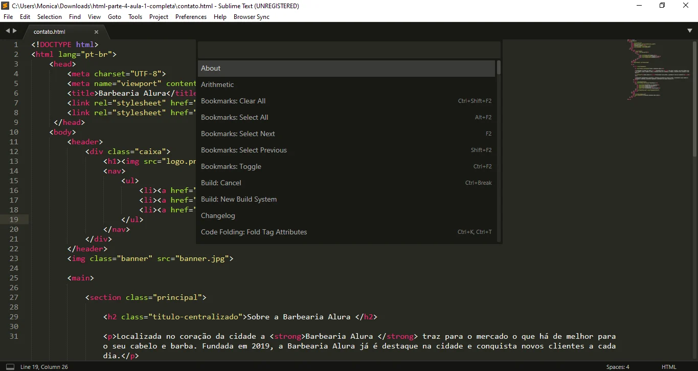

HTML5 semântico e acessibilidade na base do desenvolvimento web
Autor: Vitor Silva | Data: | Categoria: Programação

Estruturar documentos com tags e elementos HTML5 melhora a legibilidade e a organização da página.
O uso correto de etiquetas como <header>, <main>, <article> e <footer> facilita a indexação pelos motores de busca e garante compatibilidade com leitores de ecrã.